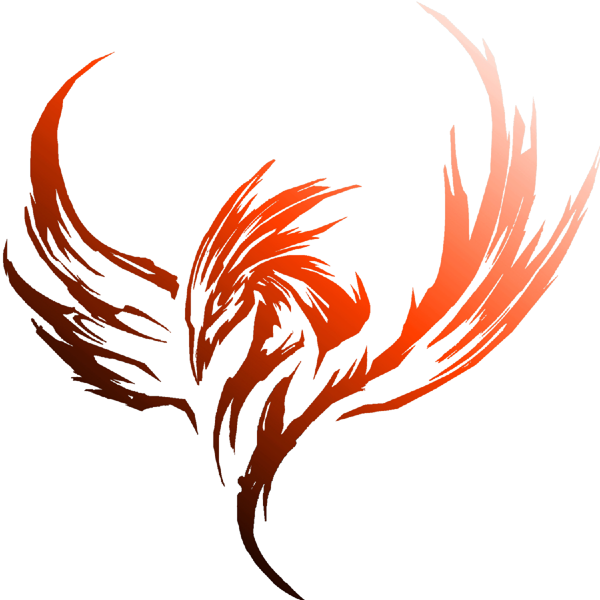

Pablo MULLER

Uma fênix, um meteoro ou um foguete? Adjetivos faltam para o gaúcho que imediatamente se
tornou um dos grandes pilotos da Idols League. Após uma impecável temporada de estreia,
Pablo vem para a Senna com status badalado como um “futuro campeão”. Vice-campeão da
Liga Prost.